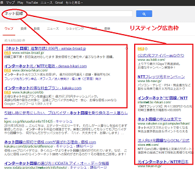

ホームページの集客方法
ホームページに見込み客を集客するには、「広告を配信して集客する方法」と「SEO対策で検索エンジンに上位表示する方法」があります。
広告を配信して集客する方法
→ リスティング広告やアフィリエイト広告を配信するSEO対策で上位表示する方法
→ 自分で最適化する、もしくはSEO業者へ依頼する
広告を配信する場合は費用がかかるものの、今すぐアクセスアップにつなげることができます。
一方、SEO対策をして検索エンジンで上位表示するには、数か月から数年単位で時間がかかるのが一般的です。また、SEO業者に依頼したとしても、検索エンジンペナルティーを受ける可能性もありリスクが高いです。
できるだけ、SEO対策については費用をかけず、最低限の対策を自分で時間をかけて実施し、主に「リスティング広告」や「アフィリエイト広告」を利用して集客していくとよいでしょう。
リスティング広告（検索連動広告）を配信して集客する方法
広告を配信して集客するには、リスティング広告を利用するのが一般的です。
このリスティング広告は、ヤフーやグーグルなどで検索した際、その検索キーワードに連動して表示される広告のことです。検索キーワードによって表示される広告が変わるため「検索連動型広告」ともよばれています。
例えば、「ネット回線」などと検索した際、NTTやauなどさまざまな広告が表示されますが、ユーザーが検索したキーワードに連動して関連性の高い広告のみが表示されるため、漠然とサイト上に表示される広告よりも高い効果が見込めます。

リスティング広告
→ 「検索」はユーザーの自発的な行為なので効果が高いテレビCMや一般サイトで表示される広告
→ 漠然と受け身の状態で表示されるため効果は低い
このリスティング広告は１クリックいくらで費用を支払うことになりますが、掲載される位置は入札制のため、高い単価を提示すればするほど目立つ位置に表示されます。この入札単価や費用の上限などは自分で指定することができるため、予算の範囲内で広告を配信することができます。
検索サイトにはbingなどもありますが、日本での検索シェアの大部分はグーグルとヤフーの２社になりますので、この両社で広告を配信しておけば十分でしょう。
■ グーグルの検索結果に広告を表示
→ Google 広告
■ ヤフーの検索結果に広告を表示
→ Yahoo!広告
また、グーグルやヤフーの検索結果に加え、パートナーサイトである一般的なニュースサイトにも広告を配信することができます。
けれども、一般的なニュースサイトの場合は検索行為を経由していないため、こちらは厳密には検索連動型広告とはいえず、グーグルやヤフーの検索結果に配信する場合と比較すると効果の面で違いが出てくるかもしれません。
どちらかのみに指定することもできますので、費用対効果を計測しながら広告を配信されるとよいでしょう。
アフィリエイト広告を配信しての集客方法（法人向け）
アフィリエイト広告はホームページやブログの運営者と提携し、主に個人サイト上で広告を配信する集客方法になります。広告を配信する際、サイト運営者と直接やり取りする必要はなく、アフィリエイト会社がすべて仲介して対応してくれます。
広告主 ←→ アフィリエイト会社（ASP） ←→ サイト運営者
アフィリエイトサービスを利用するにあたり、ASP（アフィリエイト・サービス・プロバイダー）とよばれる業者を利用しますが、成果が発生したときにだけ報酬を支払えばよいので費用を管理しやすい集客方法といえます。
ただし、成果が発生した際の「成果報酬」のほかにも、「初期費用」や「月額固定費」が費用としてかかります。
■アフィリエイト出稿費用の目安
- 初期費用：5万円程度
- 月額固定費：5万円程度
- 成果報酬（サイト運営者への報酬）：自由設定
- ASP手数料：成果報酬の30％程度
- その他：預かり金など
ASPによって費用の違いがありますので、下記の資料請求にてご確認ください。
■国内大手のアフィリエイトASP
個人サイト運営者が多数登録しているアフィリエイトサービスとしては、Ａ８ネットやアクセストレード、バリューコマースなどが有名です。
バリューコマース
登録媒体は目視による審査があるため、質の高いサイトに広告を配信することができます。
初期費用を抑えたい場合はライトプランがおすすめです。
→ バリューコマース株式会社（ECサイト募集）A8.net
エーハチネットは国内最大級のアフィリエイトASPです。ホームページやブログの運営者ならたいていは登録しているため、広告を配信できる媒体数も多いです。
月額固定費33,000円（税別）～
→ A8.net（アフィリエイト運用代行サービス）アクセストレード
担当者とのメールやり取りなどの印象でいいますと、アクセストレードがおすすめです。
→ アクセストレード（広告主）
ほか、アフィリエイトBなどもチェックされるとよいでしょう。
金融や美容、健康食品、あるいはモバイル広告など、アフィリエイト会社によって得意なカテゴリーにも違いがありますので、各社を比較した上でご検討されてみることをおすすめします。
アフィリエイト広告出稿のメリットとデメリット
■広告の関連性の精度が高い
アフィリエイト広告は、比較情報やレビューなどのコンテンツ内で広告掲載されるケースが多いです。そのため、自動で機械的にコンテンツマッチされるのではなく、サイト運営者自身が手動でコンテンツマッチさせているため、関連性の精度が高くなり、成約率が高くなる傾向にあります。
■リスティング広告の取りこぼしに対応
検索結果で上位に表示されている個人サイトの訪問者についても、検索行為を経たあとの関心の高いアクセスになりますので、そのようなSEO上位の個人サイトにもアフィリエイト広告を配信することにより、効率的にアプローチすることができます。検索上位サイトの囲い込みなども、アフィリエイト会社が代理で交渉してくれることでしょう。
■情報収集やリサーチ面でのメリット
ASP担当者と連絡をとることにより、様々な情報を共有できるメリットがあります。定期的に担当者と連絡をとり、情報交換するとよいでしょう。
一方、デメリットとしましては、サイト運営者もリスティング広告を利用して集客するケースがありますので、リスティング単価が競合して高くなってしまう可能性もあります。そのような場合は、リスティングＮＧなどを設定して対応することをおすすめします。
前のページ：ホームページ開設後のアクセスアップ